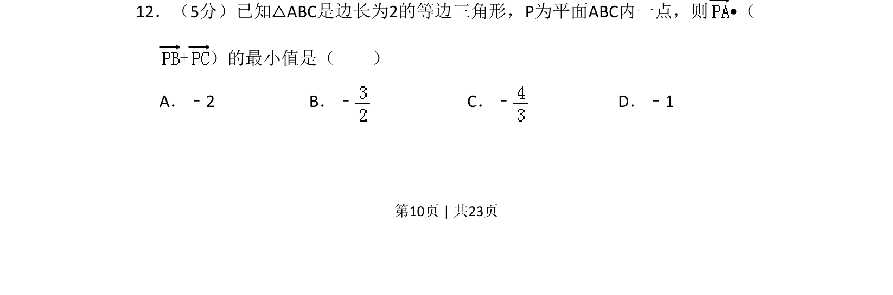
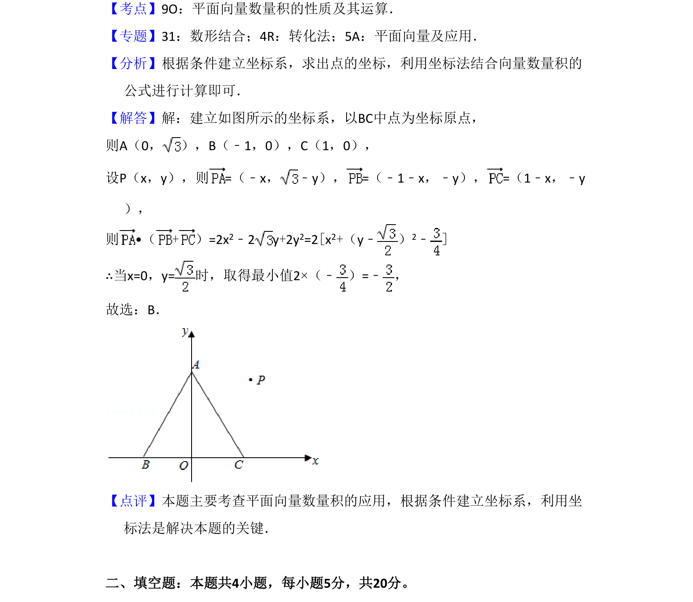

考点：平面向量数量积 坐标法 最值 等边三角形
平面向量数量积
坐标法
最值
等边三角形

本题考查向量数量积的最值问题，通过建系或利用向量中点公式将数量积转化为点P到某点的距离平方求最小值。

📄 原 PDF 第 10 页：素材/真题/吉林/2008-2024·（吉林）数学高考真题/2017年高考数学试卷（理）（新课标Ⅱ）（解析卷）.pdf
素材/真题/吉林/2008-2024·（吉林）数学高考真题/2017年高考数学试卷（理）（新课标Ⅱ）（解析卷）.pdf